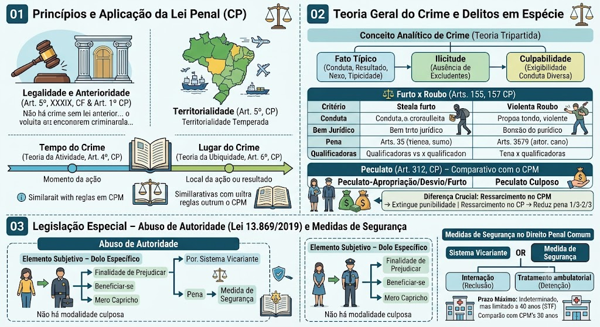

Material de estudo: Princípios, Teoria do Crime e Legislação Especial
Material complementar · Ver fonte no GitHub
Princípios e Aplicação da Lei Penal (CP)
Legalidade e Anterioridade
Art. 5º, XXXIX, CF e Art. 1º do CP: não há crime sem lei anterior que o defina, nem pena sem prévia cominação legal. No CP, o princípio não se estende expressamente às medidas de segurança (diferente do CPM).
Territorialidade (Art. 5º, CP)
Aplica‑se a lei brasileira ao crime cometido no território nacional (teoria da territorialidade temperada). Inclui embarcações e aeronaves brasileiras de natureza pública ou a serviço do governo.
Tempo do Crime – Teoria da Atividade (Art. 4º, CP)
Considera‑se praticado o crime no momento da ação ou omissão, ainda que outro seja o momento do resultado. (Mesma regra do CPM).
Lugar do Crime – Teoria da Ubiquidade (Art. 6º, CP)
Considera‑se praticado o crime no lugar da ação ou omissão, no todo ou em parte, bem como onde se produziu ou deveria produzir‑se o resultado. (Idêntica ao CPM).
Teoria Geral do Crime e Delitos em Espécie
Conceito Analítico de Crime (Teoria Tripartida)
Fato típico (conduta, resultado, nexo, tipicidade) + Ilicitude (ausência de excludentes) + Culpabilidade (exigibilidade de conduta diversa).
Furto x Roubo (Arts. 155 e 157, CP)
| Critério | Furto | Roubo |
|---|---|---|
| Conduta | Subtrair coisa alheia móvel | Subtrair com violência ou grave ameaça |
| Bem jurídico | Patrimônio | Patrimônio + integridade física/liberdade |
| Pena | Reclusão de 1 a 4 anos (+ multa) | Reclusão de 4 a 10 anos (+ multa) |
| Qualificadoras | Furto mediante fraude, etc. | Uso de arma, concurso de pessoas, etc. |
Peculato (Art. 312, CP) – Comparativo com o CPM
Peculato‑apropriação / desvio / furto: funcionário público que, em razão do cargo, subtrai ou desvia bem público.
Peculato culposo: se o funcionário concorre culposamente para o dano.
Diferença crucial:
- No CPM, o ressarcimento do dano antes da sentença extingue a punibilidade (Art. 123, VI).
- No CP comum, o ressarcimento apenas reduz a pena de 1/3 a 2/3 (Art. 312, § 2º).
Legislação Especial – Abuso de Autoridade (Lei 13.869/2019)
Elemento Subjetivo – Dolo Específico
Exige finalidade de prejudicar outrem, beneficiar a si ou a terceiro, ou por mero capricho/satisfação pessoal. Não há modalidade culposa.
Medidas de Segurança no Direito Penal Comum
Sistema vicariante: o juiz aplica pena (se imputável) ou medida de segurança (se inimputável), nunca ambas.
Internação: para crimes punidos com reclusão;
Tratamento ambulatorial: para crimes punidos com detenção.
Prazo máximo de internação: indeterminado, mas limitado a 40 anos pelo STF (diferente do CPM, onde o limite é 30 anos).
Mapa-mental
